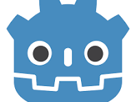

My name is Alain Riendeau, (pronounced all-in ree-end-oh)! I like to make art and CGI. I have been drawing all of my life even since I was a kid. I am number four out of the six kids my parents had, and EVERY single one of us grew up to be an artist who draws (exept my mom). Despite that, every single one of us has a different artstyle. I could easilyh look at one of my sibilings drawings and instantly tell you who made it. My family lineage on my dads side came from a few famous french painters with oil and acrylic paintings.
I first got into blender about 3 years ago a bit after I graduated from high school and got my first labtop device. I had been in a daily drawing habbit for almost four years straight at the time, and had been drawing all of my life. When I first got into programming I was using unity. I had found myself makeing more 3d games than 2d because to my brain for some reason, the math just made more sense and I found it more natural: exept for the artwork. So I've slowly spent the last few years grinding away at this and I have learned more than I knew I ever could about matrices, normal mapping, and shaders than I ever thought there was to know.

These days I typically work with godot over unity (personal tase prefrence and I like to support open source) for game develoupment. I still make the majority of my 3d moddles and asstes for the pourpose of small indie game projects. I've definantly figured out what my style looks like: heavy normal maps, load of specular highlights, lots of bloom, emmisive maps on anything that glows, high contrast, high saturation ext. I like to work with lots of furry art, and artisitc nude, but I will not post that here much because I understand those things can be uncomfortable for certain types of people. I can easilly get lost in just makeing a 3d enviorment you can walk around, with decorations you can look at. I hope that just playing around and getting carried away is how I continue to grow as a 3d artist.